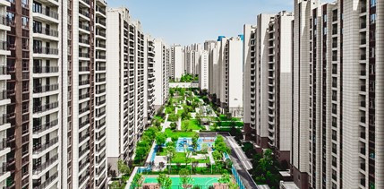
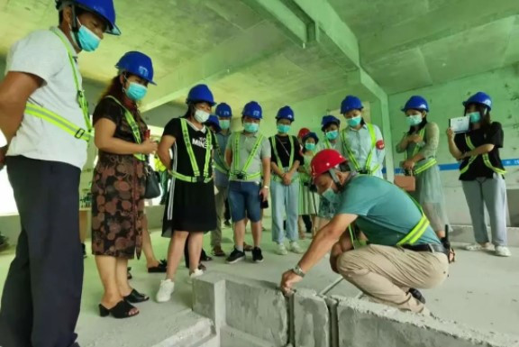
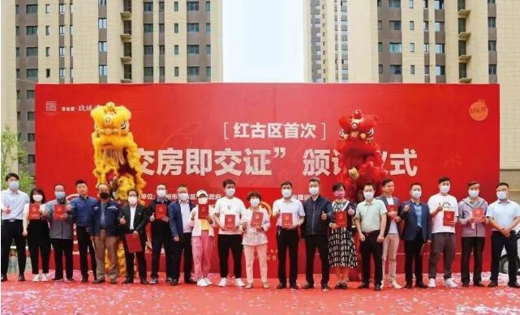

首页 > 正文
这份交付成绩单的背后，碧桂园做了啥？
自今年7月底国家首次强调“保交楼、稳民生”以来，中央到地方密集出台“保交楼”相关政策，目前已有超30个省市出台了“保交楼”具体举措。同时，多项财税政策以及地方层面的各种措施接续出台。可见，“保交楼”已被视为房地产行业的核心工作。
在房住不炒政策调控主基调下，“交付”被赋予更重要的意义。在房地产调控稳地价、稳房价、稳预期的“三稳目标”下，保竣工、保交付才能保障房地产业良性循环和社会健康稳定发展。同时，交付力即最佳品牌宣言，在行业变革期，调动一切资源保竣工、保交付是确保企业现金流健康、盘活资金的关键环节和优先工作。
而房产交付引发的相关纠纷一直是民生热点，建筑和装修质量问题、规划变更、延期交房、虚假承诺、交标降低、面积缩水等等近年来屡见不鲜。什么才是好的交付力，俨然成为新形势下对房企提出的重大课题。
楼市“攻坚战”，关键看交付力
房企作为“保交楼”的责任主体，不仅仅是要“保交楼、保预期”。同时，如何让购房者“收好楼”也是摆在房企面前尤为重要的一环。
以碧桂园为例，交付方面，2022年前三季度，碧桂园集团连同其合营公司和联营公司已在30个省、267座城市、910个区县，累计合同交付共45万套房屋，累计交付面积超5300万平方米。根据国家统计局数据，碧桂园前三季度累计交付面积约占全国18%，如果不考虑单套面积差异等因素，大体上相当于全国每交付5套就有1套是碧桂园的。
在总量领跑的同时，碧桂园还从研发、设计、采购、工程、交付前服务、交付体验、交付后生活场景等具体环节全面发力，用实际而有效的行动践行“保民生、保交付、保品质”的社会责任感与企业实力。
碧桂园总裁莫斌曾表示，要进一步完善制度标准，强化交付评估，倒逼施工过程管理，秉承对业主高度负责的态度，提升产品品质，努力实现完美交楼。
对房企来说，“保交付”不仅仅是一个承诺，更是一份责任。面对复杂的市场局势，碧桂园通过多项硬核保障举措，以“精确”“高效”“安全”等关键词为基底，交出了令人满意的答卷。
夯实“交付力”，碧桂园全面发力
交付只是第一步，品质交付才是硬实力，只有好品质的产品才能持续获得消费者的信赖，确立企业良好的口碑。从一纸规划到交付美好，碧桂园一直都在践行产品制胜的法则。
对购房者来说，品质交付不仅意味着一个舒心的住所，更是往后幸福美好生活的开启。因此，在保证交付进度、交付品质的同时，碧桂园还在致力于加码交付“内涵”。同时升级服务力与产品力，建立全周期、多节点、专业化、系统化的完善体系，是碧桂园“交付力”脱颖而出的“制胜关键”。
利用“交付力”串联起全线条、各部门的工作，碧桂园启动了流程化、规范化的交付体系，提前介入交付环节，保证项目保质保量完成集中交付。
为了切实保障交付的资源保障，集团运营中心联动招采中心，定期评估项目交楼风险等级，及时进行跟进帮办，协调合作方的资源投入。区域、项目的工程款优先保证交楼批次支出，确保施工单位有人员、有材料、有机械。
设置了提资、审图、开放开盘、交付样板验收、交楼联合验收五大关键节点，进行营销、客关、设计、运营、工程联合检查，不放过任何风险。
在施工过程中，碧桂园在土建移交精装修、大型机械设备拆除、竣工备案等多个核心一级节点上强化监控。如果发现有进度相对落后的项目，就利用集团的管控能力，倾斜人力、物力为项目提速。
自从2022年以来，碧桂园实施了强基行动2.0，进一步强化工程管理体系，完善技术标准体系，从领导一线督查、现场经验交流、固化管理行为、狠抓关键工序、动作标准化，并举办“工程文化季”系列活动，弘扬工程师文化，努力实现项目完美交付与口碑相传。

集团总裁、集团大运营组长每季度一次现场质量安全检查，区域总裁每两月施工现场安全检查并召开安全生产会议。据统计，今年前三季度，碧桂园项目总累计周巡盘超4.6万次，第三方巡检累计达2222个标段，前三季度交付评估累计达1169个批次。
在品质把关方面，碧桂园规定，所有项目经过项目自查、区域各专业条线联合查验、物业查验、区域总裁查验合格后，还将进行独立的第三方评估，达到合格分数后，方能开启交付；严格落实交付评估制度，第三方交付评估不通过坚决不交付。值得注意的是，检查点涵盖室内、公区、屋面、外立面、园建绿化等共计800余项内容，达到全面覆盖的基本目标。
碧桂园致力于优化客户体验，签约两个月后，碧桂园开始每月向业主播报项目工程进度，不定期穿插工地开放的直播活动，施工过程全程透明化向业主展示。部分项目甚至开展常态化工地直播，邀请业主“云监工”，随时随地关注工程进度。
交付前，定期举办客户预验收活动，邀请所有业主提前验收，整改报修问题，确保如期顺利交付。截至9月底，碧桂园今年已经在各地累计举办了171场工地开放（直播）活动，服务业主超3万户。

交付服务也在不断地提升，碧桂园设立了一站式收楼服务，不仅安排专业物业人员全程跟进，还会邀请专业验房师为业主提供一对一专业验房。项目交付现场就有维修材料及快修队，现场发现小问题即刻解决。2022年上半年，碧桂园标准时限维修关闭率超93%。
体系化的运作，印证了莫斌所说的：“一切以客户为中心，我们的交付标准要进一步提升，对质量的控制要进一步向前端延伸。”
“交房即交证”，倒逼交付力提升
交付力是商品住宅预售制下的产物，今年各地也陆续试行“交房即交证”，尽可能为购房者规避风险，保障其合法权益。
“交房即交证”是指新建商品房项目交房时，不动产登记机构与税务、金融机构等部门联动，在交房现场为提出申请的购房人办理不动产登记、颁发不动产权证书。
上半年，碧桂园在湖北、山东、甘肃、四川等地的多个项目，试点推行“交房即交证”，共有36个区域146个项目165个批次实现“交房即交证”。交付的质量和维保服务满意度同比稳步提升8%以上，总体满意度整体提升4%。

交房即交证，意味着开发商不仅要在房子交付前实现工程验收达标，还要提前完成所有围绕交房交证的服务事项。这就能促使开发商加强项目管理，更加重视楼盘品质，同时必须前置完善各项服务工作，倒逼产品和服务提升，进而促进房地产行业健康发展。
碧桂园将“交房即交证”作为交付力提升的重要环节，彰显了优质房企“保民生、保交付、保品质”的社会责任感，有利于增强购房者、业主和市场投资者的信心。在新时代的命题下，这也是房企为美好生活赋能的新示范。
韧性十足的稳健经营，碧桂园的“底气”所在
“交付力”靠的不是一句口号，而是需要建立全面、严格、明确的产品体系打造标准。能实现如此规模的“高品质交付”，是碧桂园长期以来稳健经营管理的体现。
虽然房地产行业仍处于下行调整阶段，碧桂园却依然能保持稳健的基本面。前11个月碧桂园累计全口径销售金额达4412.9亿元，继续稳居行业首位。
凭借着充满韧性的稳健经营，碧桂园工商银行、农业银行、中国银行、邮政储蓄银行、中信银行、广发银行、浦发银行、光大银行、顺德农商银行、珠海华润银行等十家银行的授信支持，总额度超过3000亿元。金融机构对优质房企的支持，离不开碧桂园高质量发展的内核。历经锤炼和考验之后，充分展现出碧桂园可持续发展的竞争力。
房地产经历过高速发展期，如今回归常态发展。在房住不炒的主旋律下，能始终坚持产品的长期主义者，方可持续发展。这也是碧桂园应对市场变化、提升核心竞争力的重要支撑。
对于购房者而言，在市场下行、开发商接连“暴雷”、楼盘烂尾事件频发的当下。信心缺乏，更需要房企从行动上去提振。碧桂园迈出了坚实的步伐，这是一家责任企业实力的最好显现，同时，也是给予购房者最好的安全承诺！